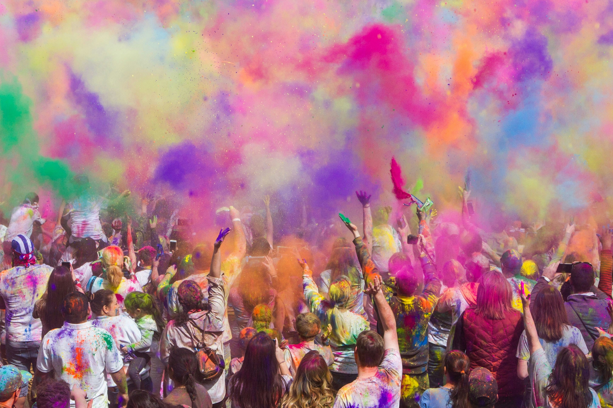

Holi, known as the Festival of Colors, is a vibrant and joyous celebration that heralds the arrival of spring. It is a time when people smear each other with colors and splash water, symbolizing the victory of good over evil, love, and the joy of life. This Hindu festival is celebrated on the full-moon day of Phalguna (February–March) and is marked by festivities that involve music, dance, and the sharing of sweets.
The night before Holi, bonfires are lit to signify the burning of the demoness Holika and the triumph of good over evil. The next day, the air is filled with powdered colors known as 'gulal' and colored water. People of all ages and backgrounds participate in this playful tradition, which also serves as a reminder to forgive and forget past grievances.
While Holi is rooted in Hindu mythology, it is celebrated by many non-Hindus as well. The festival promotes unity and brotherhood as it brings together people from different walks of life, breaking down barriers of caste, creed, and color. It is a day to end conflicts, laugh and play, forget and forgive, and repair broken relationships.
Traditionally, Holi colors were made from flowers and herbs, but today, synthetic colors are more commonly used. Participants often wear white to fully embrace the rainbow of colors that will adorn them by the day's end. As the celebrations wind down, people clean up, wash off the colors, and gather together for an evening of good food and company.